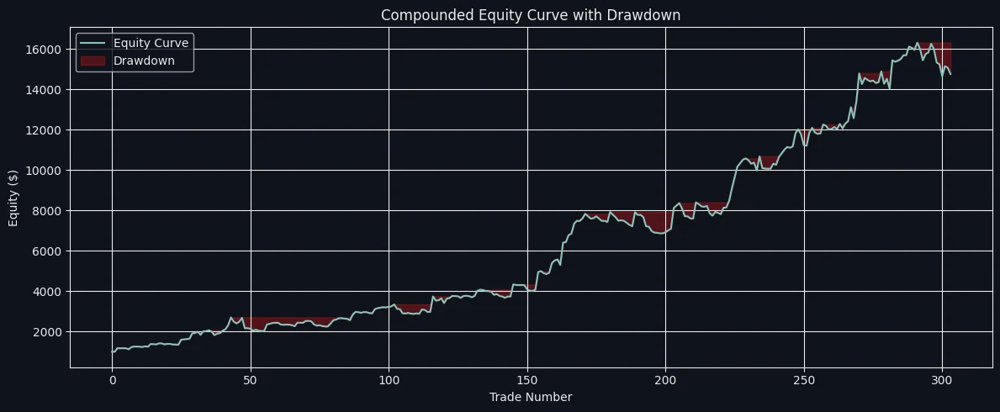

All projects
CryptoBTCHawkes process
Hawkes volatility breakout on BTC
Crypto moves come after volatility spikes from mass liquidations. This strategy clusters that volatility with a Hawkes process and trades the breakout.
Instrument BTCStyle Directional, volatility-filteredSample ~300 tradesLive Untrade, 2024 – 25Built with Python

75%
CAGR
Backtest
−16%
Max drawdown
Backtest
3.2
Sharpe ratio
Backtest
1,555%
Total return
Backtest
Thesis
Liquidation cascades make crypto volatility cluster: one forced sale triggers the next. I modelled the high–low range relative to volatility as a self-exciting (Hawkes) process to separate volatile sessions, where directional trades work, from sideways ones.
The same framework was later extended to Ethereum and to event-driven signals.
What went wrong live
LessonThe strategy ran live on Untrade and ranked among the platform's best performers for a while. But I had overfitted it: the live drawdown breached its limit, and I stopped it. Every strategy since has had to pass out-of-sample, walk-forward and Monte Carlo tests before I trust it.
How I would trade it
With BTC options now available, the signal suits long straddles around extreme-volatility events, with strict sizing: 1% of equity at risk per trade.
Full statistics
Backtest figures, net of modelled costs. Not live performance.
Performance
- CAGR
- 75%
- Total return
- 1,555%
- Sharpe
- 3.2
- Sortino
- 8
- Max drawdown
- −16%
- Longest drawdown
- 112 days
Trade efficiency
- Win rate
- 50%
- Profit factor
- 2.12
- Average trade
- +1%
- Largest win
- +25.76%
- Largest loss
- −11%